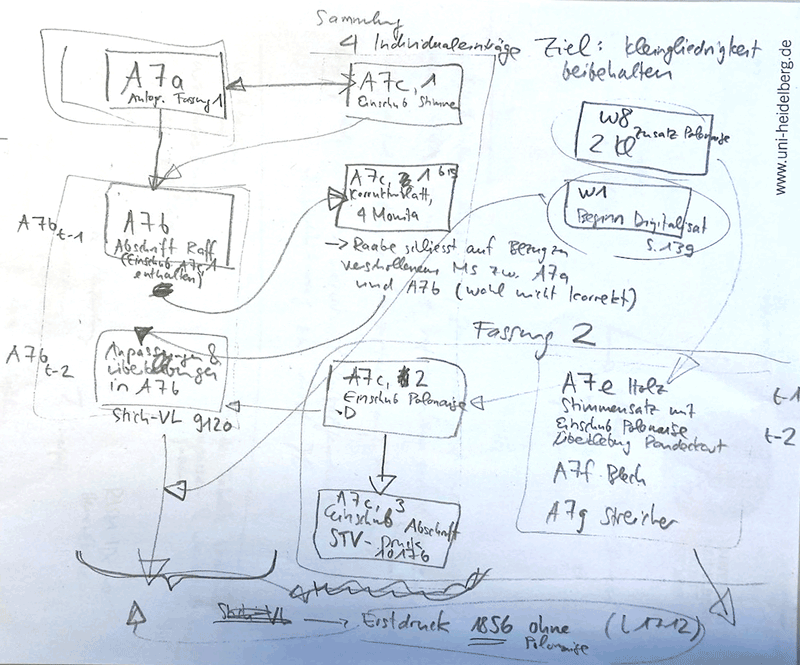

W Festklänge, Symphonische Dichtung Nr. 7
[Alternativer Titel]
[Populartitel]
Inspiration
[Textvorlage]
[Textdichter]
[Musikalische Vorlage]
[Komponist]
[Vorlage Kunstwerk]
[Künstler]
[Lokalitätsbezug]
Idee: Friedrich Schiller, „Huldigung der Künste“ (1804)
Verweis auf andere "Werke": B13, C7
Besetzung: 2 Fl, 2 Ob, 3 Klar in C, 2 Fg; 4 Hrn (1. u 2. in C, 3. u 4. in D, 3 Trp, 2 Pos [Tenorposaunen], Basspos u Tb; 4 Pk (G, C, A, B), Becken, Gr. Tr.; Str (Vl I + II, Vla, Vlc, Kb)
[Widmung]
Sätze / Incipits: Allegro mosso con brio
[Text-Incipits]
[Kompositionszeitraum]
Entstehung und Herausgabe: Die genaue Entstehungszeit der Festklänge lässt sich bislang nicht rekonstruieren. Als Orientierungspunkt dient jedoch die Datierung des Entwurfs (D-WRgs GSA 60/A 7d) mit „Carlsbad 11. August“. Da sich Liszt in Karlsbad nur im Sommer des Jahres 1853 aufgehalten hat, kann dieses Jahr auch als Entstehungszeitraum angenommen werden. Eine frühere Datierung von Lina Ramann im Jahre 1851 hat bereits Peter Raabe richtigstellen können (vgl. Ramann, Bd. 2, 1894, S. 309 und Raabe, Bd. 2, 1931, S. 300). Auch der Anlass der Entstehung der Komposition, die keinen programmatischen Text aufweist, liegt im Dunklen. Ramann war die erste, die eine sehr autobiographisch-private Inspiration für das Werk nennt; so scheint Liszt die Festklänge als „Hochzeitsmusik“ für seine geplante Vermählungsfeier mit der Fürstin Carolyne zu Sayn-Wittgenstein intendiert haben. Einen Quellenbeleg für diese Behauptung, die in der Sekundärliteratur bereitwillig aufgegriffen wurde (s. Raabe, mit Verweis auf Ramann, S. 300; Saffle 1970, S. 252; Searle 2002, S. 252; Gut, 2009, S. 514) blieb die Autorin allerdings schuldig. Aufschluss über diese Spekulationen können jedoch die Erinnerungen von Richard Pohl geben, der im Rahmen seiner Ausführungen zu den Symphonischen Dichtungen in Bezug auf den Gehalt der Festklänge vermerkt (s. Pohl 1883, S. 175): „In Ihnen wiegt das Reflektive mehr vor. Die Gefühle sind mannigfaltiger kombiniert, weniger stetig, mehr wechselnd. […] Der Komponist hat dieser Dichtung kein Programm beigegeben, und gerade hier wäre es wünschenswert gewesen, da ihn ganz bestimmte Gedanken geleitet haben, die nicht so leicht zu ergründen sind. – Dieses Werk ist das intimste, subjektivste der ganzen Gruppe. Es steht im Zusammenhange mit persönlichen Erlebnissen des Komponisten, die wir hier nicht näher andeuten wollen. Deshalb fügte Liszt auch keine Erläuterungen bei, und wir müssen sein Schweigen respektieren. ‚Festlich‘ ist die Stimmung dieses Werkes: es ist das Fest nach einem errungenen Siege – des Herzens.“ Diese Andeutungen von Pohl geben freilich Raum für Spekulationen, zumal die Verwendung einer Polonaise für viele Exegeten auf die polnische Herkunft von Liszts Partnerin schließen lässt. Gesichert ist jedenfalls, dass die Festklänge zum 50. Jubiläum der Ankunft der Großherzogin Maria Pawlowna in Weimar 1854 erstmals erklungen sind. Ihnen liegt als Idee Friedrich Schillers „Die Huldigung der Künste“ zugrunde, ein dramatisches Gedicht, das zu Ehren der Erbprinzessin Maria Pawlowna, Tochter des russischen Zaren Paul I., am 12. November 1804 in Weimar uraufgeführt wurde. Liszt bearbeitete die Festklänge noch vor der Erstellung des Stimmenmaterials (1859) um eine Variante mit Polonaise.
[Zur Widmung]
Uraufführung (Datensatzansicht von Musiconn Performance)
Weimarer Hoftheater, 9.11.1854 (vgl. Beschriftung des Stimmmaterials des ersten Pults der Violinen: „Zum ersten Male aufgeführt zum | 50jährigen Jubiläum des Einzugs der | Frau Großherzogin-Großfürstin | Maria Pavlowna in Weimar | am 9. November 1854 unter Liszt’s Direction, | als Ouverture zu Schiller’s „Huldigung der Künste“ | Zum ersten Male wiederholt beim Rheinischen Musikfest in | Aachen, unter Liszt’s Direction | Pfingsten 1857.“ (D-WRgs GSA 60/A/f [Streicher]). Die Festklänge fungierten als Einleitung zu der Vertonung von Schillers Huldigung der Künste (komponiert von Carl Stör).
Weitere Aufführungen: Im Zuge des 35. Rheinischen Musikfestes in Aachen am 1.6.1857, augenscheinlich mit großem Erfolg, da Liszt am kommenden Morgen der Fürstin zu Sayn-Wittgenstein schrieb (La Mara, Briefe, Bd. 4, S. 370): „Vous m’avez porté bonheur, et depuis hier soir ma victoire […] est complète ici. Les Festklänge ont eu aux répétitions un succès d’orchestre. Aussi l’exécution avait-elle beaucoup d’entrain et de feu – et les salves d’applaudissements et de bouquets qui ont éclaté aux dernières mesures, me rendent la modestie aisée.” Auch eine Wiederholung der Aufführung am Folgetag des Musikfestes stand zur Diskussion (s. La Mara, Briefe, Bd. 4, S. 372). Des Weiteren sind belegt: 14. Januar 1858 in Berlin unter der Leitung Hans von Bülows, 25.4.1858 in Löwenberg bei Fürst Konstantin von Hohenzollern-Hechingen unter der Leitung von Franz Liszt; 12.3.1859 in Prag unter der Leitung Hans von Bülows (s. Stimmmaterial) sowie 26.8.1864 im Rahmen der dritten Tonkünstler-Versammlung des „Allgemeinen Deutschen Musikvereins“ in Karlsruhe unter der Leitung von Franz Liszt.
Berichte: NZfM, Bd. 41/21, 17.11.1854, S. 230.
E
[Kurzbeschreibung]
Sätze / Incipits (falls anders als auf Werkebene): Allegro mosso con brio – Andante sostenuto – Allegretto – Allegro non troppo – Un poco animato il tempo – Allegro mosso con brio – Stretto
[Incipits hier grafisch einblenden!]
Besetzung (falls anders als auf Werkebene): 2 Fl, 2 Ob, 3 Klar in C, 2 Fg; 4 Hrn (1. u 2. in C, 3. u 4. in D, 3 Trp, 2 Pos [Tenorposaunen], Basspos u Tb; 4 Pk (G, C, A, B), Becken, Gr. Tr.; Str (Vl I + II, Vla, Vlc, Kb)


E
[Kurzbeschreibung]
Sätze / Incipits (falls anders als auf Werkebene): Allegro mosso con brio – Andante sostenuto – Allegretto – Allegro non troppo – Un poco animato il tempo – Allegro mosso con brio – Stretto
[Incipits hier grafisch einblenden!]
Besetzung (falls anders als auf Werkebene): 2 Fl, 2 Ob, 3 Klar in C, 2 Fg; 4 Hrn (1. u 2. in C, 3. u 4. in D, 3 Trp, 2 Pos [Tenorposaunen], Basspos u Tb; 4 Pk (G, C, A, B), Becken, Gr. Tr.; Str (Vl I + II, Vla, Vlc, Kb)
Briefbelege:
- An Alexander Ritter, 4. Dezember 1856, abgedruckt in: La Mara (Hg.): Franz Liszt’s Briefe, Bd. 1, Von Paris bis Rom, Leipzig 1893, Nr. 168, S. 244–246 [Link zum Digitalisat]
- An den städtischen Capellmeister von Turanyi in Aachen, 3. Januar 1857, abgedruckt in: La Mara (Hg.): Franz Liszt’s Briefe, Bd. 1, Von Paris bis Rom, Leipzig 1893, Nr. 170, S. 248–252
- An Agnes Street-Klindworth, 5. Juni [1857], abgedruckt in: La Mara (Hg.): Franz Liszt’s Briefe, Bd. 3, Franz Liszt’s Briefe an eine Freundin, Leipzig 1894, Nr. 51, S. 88–90
- An Fürstin Carolyne Sayn-Wittgenstein, [2. Juni 1857], abgedruckt in: La Mara (Hg.): Franz Liszt’s Briefe, Bd. 4, Franz Liszt’s Briefe an Fürstin Carolyne Sayn-Wittgenstein, Leipzig 21900, Nr. 279, S. 370–372
- An Fürstin Carolyne Sayn-Wittgenstein, [3. Juni 1857], abgedruckt in: La Mara (Hg.): Franz Liszt’s Briefe, Bd. 4, Franz Liszt’s Briefe an Fürstin Carolyne Sayn-Wittgenstein, Leipzig 21900, Nr. 280, S. 372f.
- Hans von Bülow an Liszt, 6. Januar 1859, abgedruckt in: La Mara (Hg.): Briefwechsel zwischen Franz Liszt und Hans von Bülow, Leipzig 1898, Nr. 105, S. 247
- Hans von Bülow an Liszt, 11. Januar 1859, abgedruckt in: La Mara (Hg.): Briefwechsel zwischen Franz Liszt und Hans von Bülow, Leipzig 1898, Nr. 107, S. 248f.
- An Fürstin Carolyne Sayn-Wittgenstein, [28. Februar 1859], abgedruckt in: La Mara (Hg.): Franz Liszt’s Briefe, Bd. 4, Franz Liszt’s Briefe an Fürstin Carolyne Sayn-Wittgenstein, Leipzig 21900, Nr. 279, S. 448f.
- An Fürstin Carolyne Sayn-Wittgenstein, 30. August 1864, abgedruckt in: La Mara (Hg.): Franz Liszt’s Briefe, Bd. 6, Franz Liszt’s Briefe an Fürstin Carolyne Sayn-Wittgenstein. Dritter Theil, Leipzig 1902, Nr. 53, S. 36–41.
[Werkrezensionen]
Neuausgaben: MW i/4
Literatur (mit Zotero verbinden):
- Cormac, Joanne: Liszt as Kapellmeister: The development of the symphonic poems on the Weimar stage, Birmingham 2012 [daraus, S. 274–347)]
- Dies.: Liszt and the symphonic poem, Cambridge 2017.
- Kregor, Jonathan: Program Music, Cambridge 2015 [daraus S. 99–128]
- Pohl, Richard: Franz Liszt. Studien und Erinnerungen, Leipzig 1883 [= Gesammelte Schriften über Musik und Musiker, Bd. 2], S. 175
- Ramann, Lina: Franz Liszt als Künstler und Mensch, Bd. 2, Sammlung und Arbeit, Weimar und Rom: Die Jahre 1848–1886, Leipzig 1894 [insbes. S. 309–314]
- Saffle, Michael: „Liszt’s Use of Sonata Form: The Case of ‚Festklänge‘“, in: Liszt Society Journal, Jg. 24 (1999), S. 16–27, auch in: Klára Hamburger: Liszt 2000. Selected Lectures Given at the International Liszt Conference in Budapest, Budapest: 2000, S. 201–216
- Ders.: “Orchestral Works”, in: Ben Arnold (Hg.): The Liszt Companion, Westpost 2002, S. 235–280 [insbes. S. 294f.]
- Searle, Humphrey: “The Orchestral Works”, in: Alan Walker (Hg.): Franz Liszt. The man and his music, London 1970, S. 279–317 [insbes. S. 252f.].
Verzeichnisse: Raabe 1931, S. 300f.; NewGrove (Searle) 2001, S. 832; MGG2 2004, Sp. 240; Gut 2011, S. 822.
[Schlagwörter, Vorschläge, Verlinkungen]